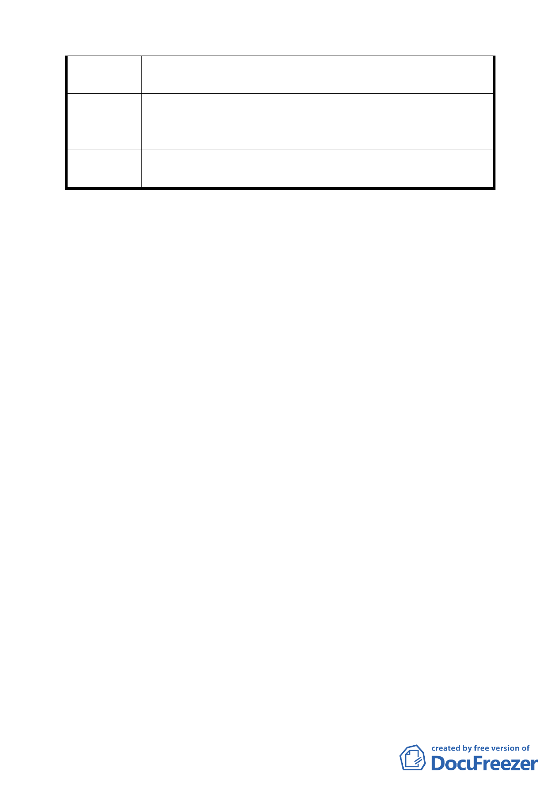

道。如新社區成形後，本巷弄居民將不得安寧，因車流無法
消化。
請於公館路 130 巷之現有巷道延伸至新社區內之道路使
建 議 辦 法 其一貫性。並恢復 130 巷 1 弄之現有居民原有之寧靜空間和
交通順暢。
委員會決議
依市府所送「第 574
料」修正後通過。
次臺北市都市計畫委員會議決議回應資
討論事項四
案名：「配合臺北市捷運松山線松山站變更第三種商業區及市場
用地為聯合開發區（捷）主要計畫案」暨「擬定臺北市捷
運松山線松山站聯合開發區（捷）暨劃定都市更新地區細
部計畫案」
案情概要說明：
一、本案計畫區包括 2 處，均位於八德路松山火車站西北側地
區，面積合計 2325 平方公尺。
二、捷運松山線松山站出入口 A 原規劃使用松山市場用地，與
市場整體規劃開發，以兼顧捷運建設與市場攤商之安置（該
計畫案業於 94 年 3 月 24 日公告發布實施）。因松山市場經
指定為臺北市市定古蹟，致原計畫無法執行，市府爰另覓地
規劃設置捷運出入口，並配合辦理都市計畫變更，變更第三
種商業區及部分市場用地為聯合開發區（捷）暨配合劃定都
市更新地區。
三、本主要暨細部計畫案係市府 96 年 12 月 12 日以府都規字第
09635188803 號函送到會，並自 96 年 12 月 13 日辦理公開
展覽。
四、申請及辦理單位：臺北市政府。
五、法令依據：
主要計畫：都市計畫法第 27 條第 1 項第 4 款。
17